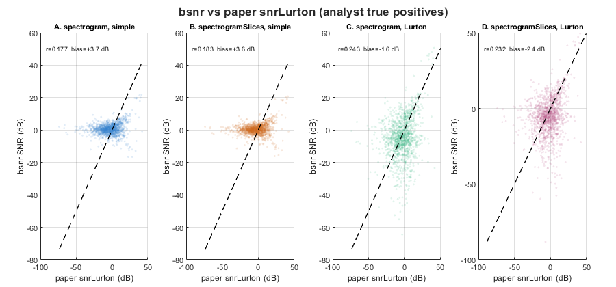

SNR of Antarctic blue whale D-calls — Casey 2019
Estimates SNR for 1319 adjudicated analyst true-positive D-call detections from Miller et al. (2022), using four bsnr configurations spanning two methods (spectrogram, spectrogramSlices) and two formulas (simple power ratio, Lurton). Results are compared against the paper's snrLurton values.
Exact reproduction of the paper's SNR is not possible from the published annotations alone. The original analysis used max(analyst, detector) duration as the signal window length, which requires the detector output. The published capture history (Appendix S4) also has corrupt tEnd values for 1318/1319 rows; tEnd is reconstructed here from t0 + duration. Correlation with paper snrLurton is r ~ 0.35 using analyst-only duration.
REFERENCE Miller, B.S. et al. (2022). Deep Learning Algorithm Outperforms Experienced Human Observer at Detection of Blue Whale D-calls. Remote Sensing in Ecology and Conservation. https://doi.org/10.1002/rse2.297
DATA Capture history (Appendix S4): doi:10.1002/rse2.297 Recordings: Australian Antarctic Data Centre https://data.aad.gov.au/metadata/AAS_4102_longTermAcousticRecordings
Contents
Configuration
wavRoot = 'S:\work\annotatedLibrary\BAFAAL\wav\Casey2019'; captureHistoryFile = fullfile(fileparts(mfilename('fullpath')), ... 'S4-captureHistory_casey2019MGA_vs_denseNetBmD24_judgedBSM_cut.csv'); % STFT: nfft=256 at 1000 Hz SR gives 0.256 s windows, ~4 Hz resolution. % This is the best-matching configuration to the paper's SNR distribution % (median within 0.5 dB, 33rd percentile within 1 dB) without requiring % the reconciled detector duration. nfft = 256; nOverlap = 192; % 75% overlap
Load annotations
fprintf('Loading capture history...\n'); ch = readtable(captureHistoryFile); % Analyst true positives: verdict==1 (adjudicator confirmed) & detect_t1==1 (analyst detected) tpMask = ch.verdict == 1 & ch.detect_t1 == 1; chTP = ch(tpMask, :); nTP = height(chTP); fprintf(' Analyst true positives: %d / %d\n', nTP, height(ch)); % Build annotation table. % tEnd rebuilt from t0+duration — tEnd_table1 is corrupt in Data S4 % (equals t0 for 1318/1319 rows). annots = table(); annots.soundFolder = repmat({wavRoot}, nTP, 1); annots.t0 = chTP.t0_table1; annots.duration = chTP.duration_table1; annots.tEnd = chTP.t0_table1 + chTP.duration_table1 / 86400; annots.freq = [chTP.fLow_table1, chTP.fHigh_table1]; annots.channel = ones(nTP, 1); annots.classification = repmat({'Bm-D'}, nTP, 1); fprintf(' Duration: median=%.2f s, range=[%.2f, %.2f] s\n', ... median(annots.duration), min(annots.duration), max(annots.duration)); fprintf(' Freq bounds: median [%.0f-%.0f] Hz, range [%.0f-%.0f] Hz\n', ... median(annots.freq(:,1)), median(annots.freq(:,2)), ... min(annots.freq(:,1)), max(annots.freq(:,2)));
Loading capture history... Analyst true positives: 1319 / 2189 Duration: median=3.71 s, range=[1.46, 14.46] s Freq bounds: median [38-77] Hz, range [8-113] Hz
Compute SNR — four configurations
baseParams = struct( ... 'nfft', nfft, ... 'nOverlap', nOverlap, ... 'noiseDuration', 'beforeAndAfter', ... 'noiseDelay', 0.5, ... 'showClips', false); configs = { 'spectrogram', false, 'A. spectrogram, simple' 'spectrogramSlices', false, 'B. spectrogramSlices, simple' 'spectrogram', true, 'C. spectrogram, Lurton' 'spectrogramSlices', true, 'D. spectrogramSlices, Lurton' }; nConfigs = size(configs, 1); snrResults = cell(nConfigs, 1); for c = 1:nConfigs p = baseParams; p.snrType = configs{c,1}; p.useLurton = configs{c,2}; fprintf('Computing %s...\n', configs{c,3}); res = snrEstimate(annots, p); snrResults{c} = res.snr; end paperSNR = chTP.snrLurton;
Computing A. spectrogram, simple... SNR analysis started: 19-Apr-2026 09:48:33 1319 annotations to process (parallel) Progress: 0 25 50 75 100% |----------|-----------|-----------|----------| Starting parallel pool (parpool) using the 'Processes' profile ... Connected to the parallel pool (number of workers: 31). ################################################### SNR analysis completed: 19-Apr-2026 09:49:25 Computing B. spectrogramSlices, simple... SNR analysis started: 19-Apr-2026 09:49:25 1319 annotations to process (parallel) Progress: 0 25 50 75 100% |----------|-----------|-----------|----------| ################################################### SNR analysis completed: 19-Apr-2026 09:49:26 Computing C. spectrogram, Lurton... SNR analysis started: 19-Apr-2026 09:49:26 1319 annotations to process (parallel) Progress: 0 25 50 75 100% |----------|-----------|-----------|----------| ################################################### SNR analysis completed: 19-Apr-2026 09:49:27 Computing D. spectrogramSlices, Lurton... SNR analysis started: 19-Apr-2026 09:49:27 1319 annotations to process (parallel) Progress: 0 25 50 75 100% |----------|-----------|-----------|----------| ################################################### SNR analysis completed: 19-Apr-2026 09:49:28
Summary statistics
allSNR = [snrResults; {paperSNR}];
allLabels = [configs(:,3); {'E. paper snrLurton'}];
nAll = numel(allSNR);
fprintf('\n%-34s %6s %6s %6s %6s %6s %6s\n', ...
'Configuration', 'n', 'mean', 'median', '33rd', '67th', 'NaN');
fprintf('%s\n', repmat('-', 1, 80));
for k = 1:nAll
s = allSNR{k};
ok = isfinite(s);
fprintf('%-34s %6d %6.1f %6.1f %6.1f %6.1f %6d\n', ...
allLabels{k}, sum(ok), mean(s(ok)), median(s(ok)), ...
prctile(s(ok), 33), prctile(s(ok), 67), sum(~ok));
end
Configuration n mean median 33rd 67th NaN -------------------------------------------------------------------------------- A. spectrogram, simple 1319 0.6 0.5 -0.6 1.7 0 B. spectrogramSlices, simple 1319 0.5 0.4 -0.5 1.4 0 C. spectrogram, Lurton 1319 -4.7 -4.8 -8.3 -0.7 0 D. spectrogramSlices, Lurton 1319 -5.5 -5.3 -8.7 -1.5 0 E. paper snrLurton 1319 -3.1 -2.7 -8.0 2.7 0
Correlations with paper snrLurton
fprintf('\nCorrelation with paper snrLurton:\n'); for c = 1:nConfigs s = snrResults{c}; ok = isfinite(s) & isfinite(paperSNR); r = corr(s(ok), paperSNR(ok)); fprintf(' %s: r=%.3f bias=%+.1f dB\n', configs{c,3}, r, mean(s(ok)-paperSNR(ok))); end
Correlation with paper snrLurton: A. spectrogram, simple: r=0.177 bias=+3.7 dB B. spectrogramSlices, simple: r=0.183 bias=+3.6 dB C. spectrogram, Lurton: r=0.243 bias=-1.6 dB D. spectrogramSlices, Lurton: r=0.232 bias=-2.4 dB
Figure 1: SNR distributions
edges = -30 : 2 : 30; colours = [0.2 0.5 0.8; 0.8 0.4 0.1; 0.2 0.7 0.5; 0.7 0.3 0.5; 0.4 0.4 0.4]; fig1 = figure('Name', 'D-call SNR distributions', ... 'Units', 'pixels', 'Position', [50 50 900 420]); tlo1 = tiledlayout(fig1, 1, 2, 'TileSpacing', 'compact', 'Padding', 'compact'); title(tlo1, 'Antarctic blue whale D-calls — Casey 2019 (analyst true positives)', ... 'FontWeight', 'bold'); % Left: simple power ratio nexttile(tlo1); hold on; for k = [1 2 5] s = allSNR{k}; sPlot = max(s, edges(1)); ok = isfinite(sPlot); histogram(sPlot(ok), edges, 'FaceColor', colours(k,:), 'FaceAlpha', 0.5, ... 'DisplayName', sprintf('%s (med=%.1f dB)', allLabels{k}, median(sPlot(ok)))); xline(median(sPlot(ok)), '--', 'Color', colours(k,:), 'LineWidth', 1.5, ... 'HandleVisibility', 'off'); end hold off; xlabel('SNR (dB)'); ylabel('Count'); title('Simple power ratio vs paper Lurton'); legend('Location', 'northwest', 'FontSize', 7); grid on; % Right: Lurton nexttile(tlo1); hold on; for k = [3 4 5] s = allSNR{k}; sPlot = max(s, edges(1)); ok = isfinite(sPlot); histogram(sPlot(ok), edges, 'FaceColor', colours(k,:), 'FaceAlpha', 0.5, ... 'DisplayName', sprintf('%s (med=%.1f dB)', allLabels{k}, median(sPlot(ok)))); xline(median(sPlot(ok)), '--', 'Color', colours(k,:), 'LineWidth', 1.5, ... 'HandleVisibility', 'off'); end hold off; xlabel('SNR (dB)'); ylabel('Count'); title('Lurton formula vs paper Lurton'); legend('Location', 'northwest', 'FontSize', 7); grid on;


Figure 2: bsnr vs paper snrLurton scatter
fig2 = figure('Name', 'bsnr vs paper snrLurton', ... 'Units', 'pixels', 'Position', [50 50 900 420]); tlo2 = tiledlayout(fig2, 1, nConfigs, 'TileSpacing', 'compact', 'Padding', 'compact'); title(tlo2, 'bsnr vs paper snrLurton (analyst true positives)', 'FontWeight', 'bold'); for c = 1:nConfigs nexttile(tlo2); s = snrResults{c}; ok = isfinite(s) & isfinite(paperSNR); scatter(paperSNR(ok), s(ok), 5, 'filled', ... 'MarkerFaceAlpha', 0.15, 'MarkerFaceColor', colours(c,:)); hold on; lims = [min([paperSNR(ok); s(ok)]) max([paperSNR(ok); s(ok)])]; plot(lims, lims, 'k--', 'LineWidth', 1); hold off; r = corr(s(ok), paperSNR(ok)); bias = mean(s(ok) - paperSNR(ok)); text(0.05, 0.95, sprintf('r=%.3f bias=%+.1f dB', r, bias), ... 'Units', 'normalized', 'VerticalAlignment', 'top', 'FontSize', 7); xlabel('paper snrLurton (dB)'); ylabel('bsnr SNR (dB)'); title(configs{c,3}, 'interpreter', 'none', 'FontSize', 8); grid on; end

Save results
outFile = fullfile(fileparts(mfilename('fullpath')), ... 'snr_dcalls_casey2019_results.csv'); resultsTable = table( ... annots.t0, annots.duration, annots.freq(:,1), annots.freq(:,2), ... snrResults{1}, snrResults{2}, snrResults{3}, snrResults{4}, paperSNR, ... 'VariableNames', {'t0', 'duration_s', 'fLow_Hz', 'fHigh_Hz', ... 'snr_spectrogram', 'snr_spectrogramSlices', ... 'snrLurton_spectrogram', 'snrLurton_spectrogramSlices', ... 'snrLurton_paper'}); writetable(resultsTable, outFile); fprintf('\nResults saved to: %s\n', outFile); fprintf('Settings: nfft=%d, nOverlap=%d, noiseDuration=%s, noiseDelay=%.1f\n', ... nfft, nOverlap, baseParams.noiseDuration, baseParams.noiseDelay);
Results saved to: C:\analysis\bsnr\examples\snr_dcalls_casey2019_results.csv Settings: nfft=256, nOverlap=192, noiseDuration=beforeAndAfter, noiseDelay=0.5